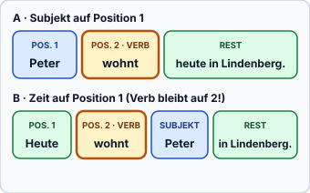

Verb-Zweitstellung im Hauptsatz
Mit einem KI-Tutor lernen
Ein KI-Tutor erklärt dir diese Seite und hilft dir bei den Aufgaben. Wähl deinen Assistenten:
Mit Claude öffnen Mit ChatGPT öffnen Mit Mistral Vibe öffnen
Du nutzt dein eigenes Konto beim Anbieter. Der Assistent ist kein Angebot von lernapps.net: lernapps liefert nur Inhalte und Aufgaben. Die Wahl gilt für alle Seiten, nur auf diesem Gerät.
Der feste Verb-Anker auf Position 2
Peter plant seine Woche in Lindenberg. Im deutschen Aussagesatz gilt eine eiserne Regel: Das konjugierte Verb bleibt auf Position 2 verankert — egal welche Satzkarte nach vorn rutscht.

© CC0-1.0Wenn Zeit oder Ort auf Position 1 wandern, rutscht das Subjekt direkt hinter den Verb-Anker.
Aufgabe
Lösung
Am Montag lernt Peter Deutsch. richtige Antwort
Richtig: Am Montag ist eine Satzkarte (Position 1), lernt bleibt auf Position 2, Peter folgt direkt dahinter.
Am Montag Peter lernt Deutsch.
Das wäre englische Wortstellung — im Deutschen stünde lernt hier falsch auf Position 3.
Am Montag Deutsch lernt Peter.
Vor dem Verb darf nur eine einzige Satzkarte stehen, nicht zwei (Am Montag + Deutsch).
Position 1 ist ein Satzglied (z. B. ein Wort wie Heute oder eine Gruppe wie Am Montag). Danach kommt immer sofort das konjugierte Verb.
Was passiert, wenn etwas anderes vorn steht?
- Verb-Zweitstellung (V2)
In jedem deutschen Aussagesatz steht das konjugierte Verb auf Position 2. Wandert eine Zeit- oder Ortskarte nach vorn auf Position 1, springt das Subjekt direkt hinter das Verb.
| Position 1 | Position 2 (Verb) | Rest des Satzes |
|---|---|---|
| Mina | spielt | heute im Sportverein. |
| Heute | spielt | Mina im Sportverein. |
| Im Sportverein | spielt | Mina heute. |
Übung
Aufgabe
Lösung
Am Dienstag spielt Lukas Fußball im Park. richtige Antwort
Richtig: Am Dienstag (Pos. 1) + spielt (Pos. 2) + Lukas (Subjekt).
Nach der Schule Peter fährt mit dem Fahrrad.
Falsch: Hier steht fährt auf Position 3. Richtig: Nach der Schule fährt Peter mit dem Fahrrad.
Im Park treffen wir Nadia und Mina. richtige Antwort
Richtig: Im Park (Pos. 1) + treffen (Pos. 2) + wir (Subjekt).
Zähle immer die Satzkarten: Egal wie viele Wörter auf Position 1 stehen (z. B. Nach der Schule), danach kommt sofort das Verb.
Aufgabe
Lösung
Richtige Antwort: 1. Am Wochenende, 2. fährt, 3. Familie Weber, 4. an den See.
Am Wochenende (Pos. 1) + fährt (Pos. 2) + Familie Weber (Subjekt) + an den See (Rest).
Aufgabe
Schreibe jeden Satz so um, dass das angegebene Wort auf Position 1 steht. Achte auf Position 2!
- Peter reads a book today. → Start with: Heute
- We eat rolls in Lindenberg. → Start with: In Lindenberg
Lösung
- Heute liest Peter ein Buch.
- In Lindenberg essen wir Brötchen.
Nach jeder Zeit- oder Ortsangabe am Satzanfang kommt im Deutschen sofort der Verb-Anker, nie das Subjekt.
Fehler gefunden oder eine Idee für diese App?